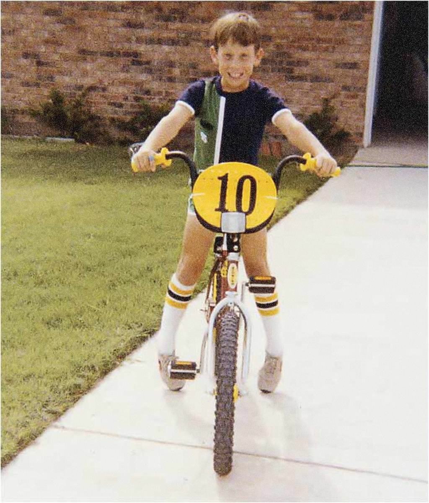

L ance Armstrong was born in Plano, Texas, a town north of Dallas, USA. He was originally named Lance Edward Gunderson. Raised by his mother, Linda Mooneyham, after his biological father, Eddie Gunderson, left when he was two. He later took the last name Armstrong when his mother married Terry Armstrong.
His athletic journey began with triathlons at the age of 14, but he soon discovered his true talent in cycling. At 17, he was invited to join the national youth cycling team. However, his high school board felt that taking a 6-week leave during his second semester in high school would hinder his graduation. Armstrong had to transfer to another high school in Dallas with his mother's support. Later, he graduated from there, and he considers Austin his hometown.
He entered the professional cycling world after winning the 1991 U.S. amateur championship and finishing 14th at the 1992 Summer Olympics. In the following year, he won the national road cycling championship in Oslo, Norway, which was his first major victory. This victory led to an invitation from the King of Norway.
During his time with the Motorola cycling team, he won the 8th stage of the 1993 Tour de France and the 18th stage of the 1995 Tour de France. He also became the world road cycling champion in 1993 and won the San Sebastian Classic in 1995. In the prestigious American DuPont cycling race, he secured victory in 1995 and 1996 and finished second in 1994. Although he did not participate in the 1996 Tour de France, he competed in the Olympics that year, but his performance was disappointing.
Copyright © Jason Zhao, Interaction Foundation FL23
Creative Director: Brian Lee
Designer: Jason Zhao
1980
 Lance Armstrong was already taking to his bicycle at age 8.